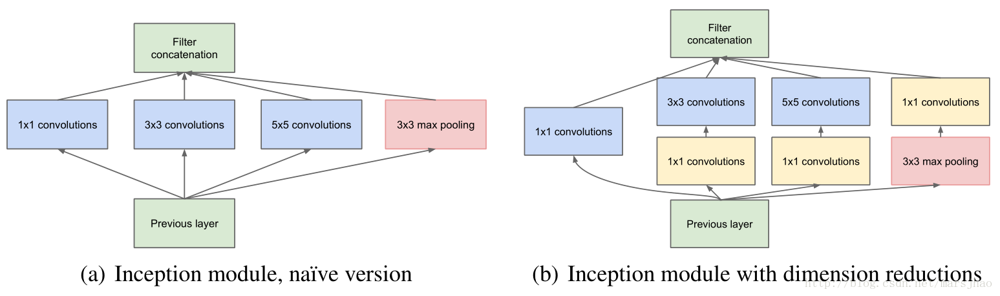

Abstract
Google提出了 架構，為了圖片的分類和檢測，並參加
ILSVRC14
一個有關電腦視覺的比賽，其中GoogLeNet在object detection與classification中，獲得好成績。
，他
改善神經網路對電腦運算
利用1x1卷積，讓計算參數減少。
，增加了網路的深度及寬度，並且保持
budget constraint
wiki → 在給定的收入和固定商品價格下，消費者能得到Ｘ商品和Ｙ商品的組合。
我認為在此指這個神經網路，在一樣的資源情況下，能有更好的結果。
，優化方式基於
我認為在此指這個神經網路，在一樣的資源情況下，能有更好的結果。
赫布理論
wiki → 突觸前神經元向突觸後神經元進行重複刺激，能加速突觸傳遞的效能。
在人工神經網路中，加速突觸傳遞的效能指的是，神經元訓練過程中的權重更新。
和
在人工神經網路中，加速突觸傳遞的效能指的是，神經元訓練過程中的權重更新。
the intuition of multi-scale processing
Google 翻譯 → 規模處理的直覺??
Multi-scale processing → 多尺度處理 → 解決圖片上的遠近問題 → 能從不同視角去擷取特中。
我猜指的是能透過赫布理論（重複進行刺激，能加快傳輸效率，相當於直覺？），達到多尺度的處理。
，特別的例子GoogLeNet為22層的網路架構，用來參加ILSVRC14。
Multi-scale processing → 多尺度處理 → 解決圖片上的遠近問題 → 能從不同視角去擷取特中。
我猜指的是能透過赫布理論（重複進行刺激，能加快傳輸效率，相當於直覺？），達到多尺度的處理。

Introduction
深度學習飛快進步，主要原因不是強大的硬體、資料集、模型，而是新的想法、 演算法、架構，如ILSVRC14資料量沒變，然而參數卻少於AlexNet的12倍， 並獲得勝利，這是利用新的架構所得到的成果，就好比R-CNN演算法。
值得注意的是為了加速行動與遷移運算發展，演算法變得更為重要， 因此提出了新的架構，而不是單單的為了成功率，在設計過程中，保持著1.5b的加乘法限制， 所以不僅是在學術探討，而是能運用在現實生活中，甚至運用在大型。
這邊主要是在研究新架構inception，名稱來自於Lin的論文與
迷因
we need to go deeper.
，deep這個詞有兩個意義，
一是擁有了inception的新架構，二是運用這個架構，加深了網路的深度，而這種架構也在ILSVRC14中得到了好的成果。
Related work
從 開始，CNN開始有了
標準架構
把卷基層堆疊在一起，過程中可能有池化層與Batch Normalization，最後再接全連接層。
，這種架構常被使用在圖片分類，
並在MNIST、CIFAR和ImageNet Classification Challenge取得好成績，
在更大數據的資料集，傾向於將網路層數、大小增加，並使用Dropout來防止Overfitting。

雖然max-pooling會遺失一些圖片資訊，但CNN還是被運用在 、 和 。
在“ ”使用不同大小的
Gabor filters
理論 → https://www.itread01.com/content/1546890854.html
OpenCV → https://makeronsite.com/opencv-python-processing-images-with-real-valued-gabor-filters.html
來處理多尺度問題，然而與上述paper的兩層不同，GoogLeNet使用Inception架構來處理
OpenCV → https://makeronsite.com/opencv-python-processing-images-with-real-valued-gabor-filters.html
多尺度問題
在做目標檢測的過程中，不管物件大小都需辨識，而小物體(像素本身就小、像素物件相對小)在取特徵的過程不是很友好。
。

{kind=link}
{kind=link}
{kind=link}